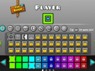
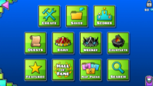

First of all, this is the Icon Kit. It can be used to change your icon/appearence in-game.
This is the editor menu. This allows you to play other levels created by people around the world and also create your own! (Internet connection and GD account needed)
This is the official trailer, which showcases everything.
Back to the Homepage